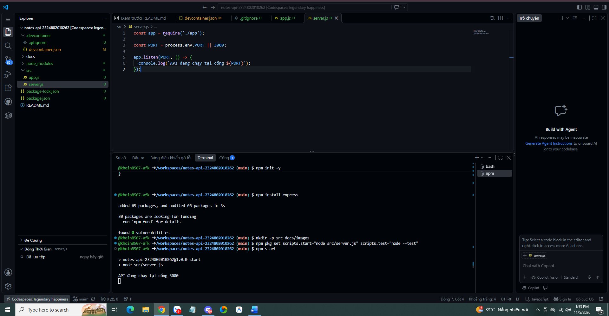
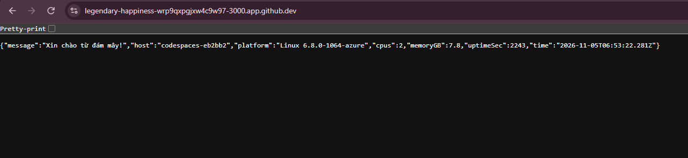
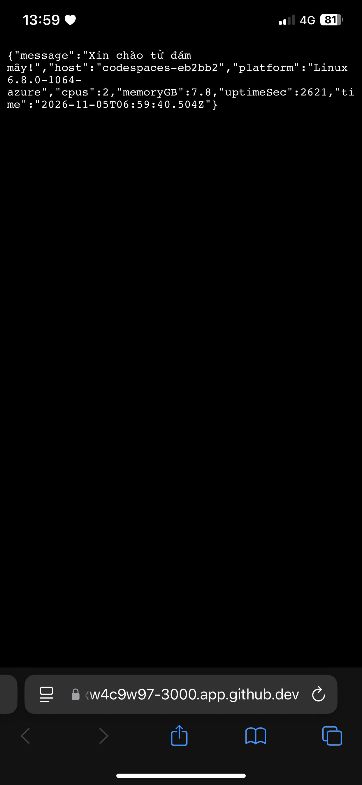
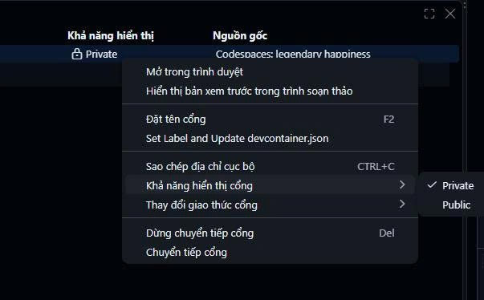
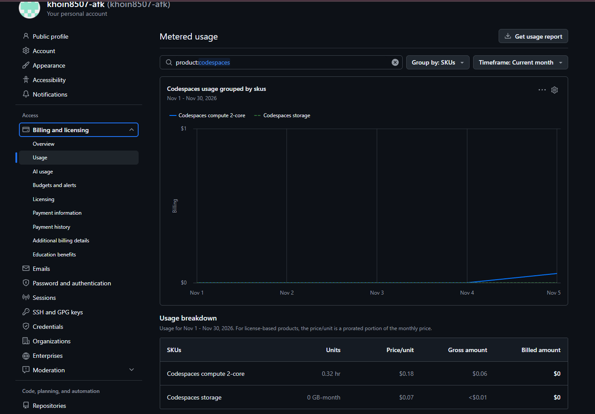
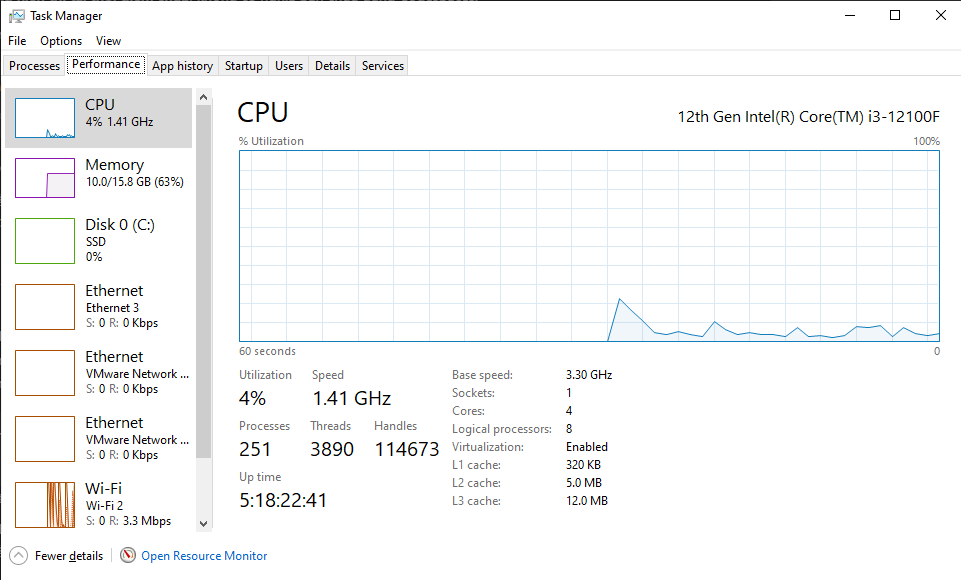
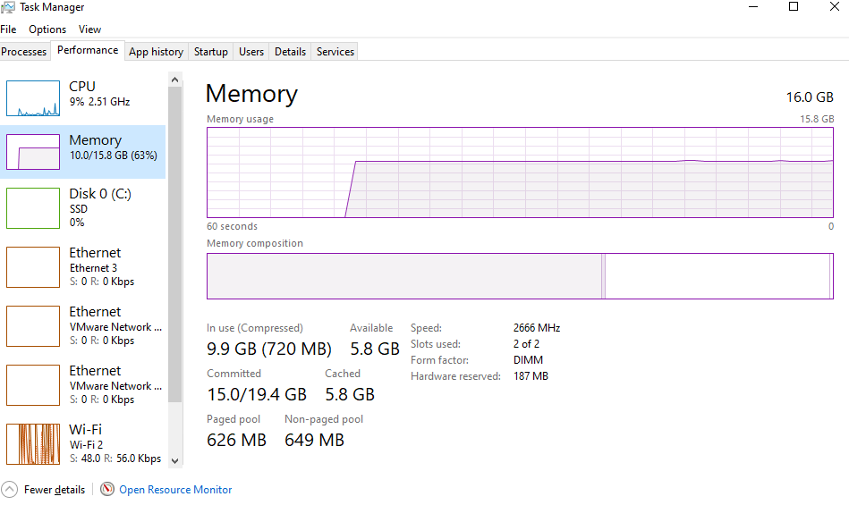
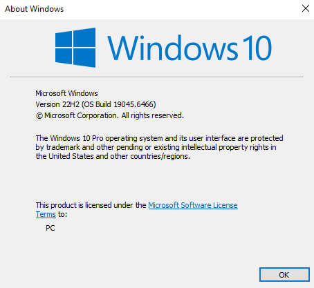
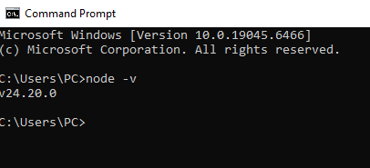

Bài 1. Lập trình trên máy ảo đám mây đầu tiên
Họ tên: Nguyễn Nguyên Khôi
MSSV: 2324802010262
Lớp: D23CNTT03
Ngày thực hiện: 05/11/2026
Múi giờ ghi nhận: Việt Nam (UTC+7)
Mã nguồn: notes-api-2324802010262
1. Mục tiêu
Cấp phát môi trường phát triển trên GitHub Codespaces, xây dựng API Hello Cloud bằng Node.js và Express, truy cập API từ điện thoại qua Internet, so sánh môi trường cá nhân với đám mây và liên hệ 5 đặc tính NIST.
2. Quá trình triển khai
- Tạo repo template tdmu-cloud-lab trong tài khoản cá nhân, sử dụng cấu hình devcontainer trong tài liệu bài học, rồi tạo repo notes-api-2324802010262 từ template.
- Khởi tạo Codespace từ nhánh main.
-
Lần đầu gặp lỗi cài Docker do tùy chọn Moby không hỗ trợ
Debian trixie. Bổ sung
"moby": falsetrong cấu hình Docker feature rồi rebuild thành công. -
Khởi tạo dự án Node.js, cài Express và tách ứng dụng
thành
src/app.js,src/server.js. - Chạy API bằng
npm starttại cổng 3000. - Chuyển cổng sang Public, truy cập bằng điện thoại qua 4G, sau đó chuyển lại Private.
- Kiểm tra Billing Usage và tạo trang báo cáo trong thư mục docs.
Thời gian khởi tạo
- Bắt đầu khởi tạo: 13:42 ngày 05/11/2026.
- Kiểm tra node -v thành công: khoảng 13:50.
- Tổng thời gian khoảng 8 phút, bao gồm xử lý lỗi Docker và rebuild; các mốc được ghi nhận đến phút.
Lần thực hiện này chưa đạt mục tiêu dưới 2 phút. Khoảng 8 phút là tổng quá trình từ lúc bắt đầu đến khi kiểm tra Node.js thành công, không phải phép đo riêng thời gian cấp phát một môi trường có cấu hình đúng ngay từ đầu.
3. Kết quả API
Endpoint GET / trả JSON có các trường
message, host, platform, cpus, memoryGB, uptimeSec và time.
| Trường | Kết quả ghi nhận |
|---|---|
| message | Xin chào từ đám mây! |
| host | codespaces-eb2bb2 |
| platform | Linux 6.8.0-1064-azure |
| cpus | 2 |
| memoryGB | 7.8 |
| Truy cập từ điện thoại | Thành công qua mạng 4G; cổng đã chuyển lại Private. |
app.js khai báo ứng dụng và endpoint; server.js khởi động máy chủ. Việc tách này giúp tái sử dụng ứng dụng cho kiểm thử và triển khai serverless với bộ chuyển đổi phù hợp ở bài sau.
4. So sánh máy cá nhân và Codespace
| Tiêu chí | Máy cá nhân | Codespace |
|---|---|---|
| Thời gian đến khi chạy được node -v | Node.js đã cài sẵn; kiểm tra thành công phiên bản v24.20.0. Không có số đo thời gian cài đặt ban đầu. | Khoảng 8 phút, từ 13:42 đến khoảng 13:50, gồm sửa lỗi cấu hình và rebuild. Node.js v22.23.4. |
| Số CPU, RAM | Intel Core i3-12100F; 4 lõi, 8 bộ xử lý logic. RAM lắp đặt 16 GB, hệ thống sử dụng được khoảng 15.8 GB. Nguồn: Task Manager. | 2 CPU logic; RAM khoảng 7.8 GiB (trường memoryGB). Nguồn: os.cpus() và os.totalmem() trong API. |
| Hệ điều hành | Windows 10 Pro 22H2, build 19045.6466. | Linux, phiên bản kernel 6.8.0-1064-azure theo API. |
| Cách truy cập từ thiết bị khác | Trong LAN cần dùng địa chỉ IP của máy, cấu hình ứng dụng và tường lửa phù hợp. Truy cập ngoài Internet cần thêm giải pháp mạng; chưa thử trong bài này. | Chuyển tiếp cổng 3000, bật Public và truy cập URL HTTPS app.github.dev từ điện thoại qua 4G. |
| Chi phí, đo bằng gì | Chi phí máy, điện, Internet và bảo trì. Chưa đo riêng chi phí cho buổi thực hành. | Billing ghi nhận máy 2-core dùng 0.32 giờ máy, tương đương khoảng 0.64 core-giờ. Giá trị compute trước khấu trừ $0.06, số tiền tính phí $0. Lưu trữ hiển thị 0 GB-month, giá trị trước khấu trừ < $0.01, tính phí $0. |
Số liệu Billing là ảnh chụp tại thời điểm kiểm tra trong kỳ tháng 11/2026, không nhất thiết là tổng cuối cùng của buổi học. CPU/RAM từ API phản ánh những gì Node.js nhìn thấy trong môi trường chạy; memoryGB được tính bằng số byte chia cho 1024 mũ 3 nên đơn vị kỹ thuật là GiB. Chuỗi platform cho biết loại hệ điều hành và phiên bản kernel, chưa xác định bản phân phối Linux. Hai môi trường có điều kiện chuẩn bị khác nhau, nên chưa đủ cơ sở kết luận môi trường nào thiết lập nhanh hơn.
5. Liên hệ 5 đặc tính điện toán đám mây của NIST
| Đặc tính | Thao tác và giải thích |
|---|---|
| Tự phục vụ theo yêu cầu | Tự bấm Create codespace để yêu cầu môi trường phát triển, không cần quản trị viên cấp máy thủ công. |
| Truy cập mạng rộng | Sử dụng môi trường qua trình duyệt và truy cập API từ điện thoại qua mạng 4G bằng URL HTTPS. |
| Gộp tài nguyên | Môi trường được cấp trên hạ tầng chung do nhà cung cấp quản lý; sinh viên không chọn máy chủ vật lý cụ thể. Đây là liên hệ về mô hình dịch vụ, chưa trực tiếp kiểm chứng cách phân bổ phần cứng. |
| Co giãn nhanh | Nền tảng hỗ trợ thay đổi cấu hình máy trong các lựa chọn được phép. Bài này mới thực hiện cấp phát môi trường, chưa thử đổi cấu hình hoặc tự động mở rộng API theo tải. |
| Dịch vụ đo lường được | Billing Usage ghi nhận compute theo giờ máy và loại máy, cùng lưu trữ theo GB-month. Máy 2-core đã ghi nhận 0.32 giờ máy, tương đương khoảng 0.64 core-giờ. |
6. Trả lời câu hỏi phản biện
6.1. Host có thay đổi sau Stop/Start không?
Host lần đầu là codespaces-eb2bb2. Chưa thực hiện lần gọi sau một ngày nên chưa có kết quả so sánh thực nghiệm. Host có thể được giữ nguyên khi khởi động lại cùng Codespace. Host giống hoặc khác không đủ để kết luận môi trường nằm trên cùng hay khác máy chủ vật lý, vì đây là tên môi trường mà ứng dụng nhìn thấy.
6.2. Codespaces là IaaS, PaaS hay SaaS?
Xét sản phẩm hoàn chỉnh mà sinh viên trực tiếp sử dụng, em lập luận Codespaces gần nhất với SaaS: một môi trường phát triển tích hợp được cung cấp qua dịch vụ. GitHub quản lý hạ tầng, máy ảo và hệ điều hành nền. Sinh viên quản lý mã nguồn, thư viện và có thể cấu hình container, runtime. Khả năng tùy biến này có nét tương đồng với PaaS. Việc có máy ảo bên dưới không đồng nghĩa toàn bộ dịch vụ là IaaS; cần xét phạm vi và trách nhiệm quản lý. Đây là lập luận theo góc nhìn sử dụng IDE như một dịch vụ, không phải nhãn phân loại chính thức do GitHub công bố.
6.3. Hai hạn chế được khắc phục và một rủi ro mới
- Giảm việc cài đặt lặp lại công cụ trên từng máy phòng lab nhờ cấu hình môi trường dùng chung.
- Giúp tiếp tục làm việc qua trình duyệt từ thiết bị khác, giảm phụ thuộc vào một máy cá nhân cụ thể.
- Rủi ro: API có thể bị người ngoài truy cập khi cổng Public. Biện pháp đã thực hiện: chỉ bật để kiểm tra rồi chuyển lại Private.
7. Ảnh minh chứng
7.1. Khởi chạy API

7.2. JSON trên trình duyệt máy tính

7.3. Truy cập bằng điện thoại qua 4G

7.4. Cổng đã về Private

7.5. Billing Usage

7.6. Cấu hình máy cá nhân




8. Kết luận
Bài thực hành đã triển khai API Hello Cloud bằng Node.js và Express trên GitHub Codespaces. Endpoint GET / trả về thông tin môi trường; API được truy cập thành công từ máy tính và điện thoại qua mạng 4G. Sau khi kiểm tra, cổng 3000 đã được chuyển lại Private.
Trải nghiệm minh họa trực tiếp khả năng tự phục vụ theo yêu cầu, truy cập mạng rộng và dịch vụ đo lường được. Billing tại thời điểm chụp ghi nhận 0.32 giờ máy 2-core, tương đương khoảng 0.64 core-giờ, với số tiền tính phí $0. Gộp tài nguyên và co giãn nhanh được liên hệ theo mô hình, khả năng của nền tảng; bài này chưa trực tiếp kiểm chứng việc phân bổ phần cứng hoặc tự động mở rộng ứng dụng theo tải.
Quá trình từ lúc bắt đầu đến khi kiểm tra Node.js thành công mất khoảng 8 phút, gồm sửa lỗi Docker và rebuild, nên lần thực hiện này chưa đạt mục tiêu dưới 2 phút. Chưa có số đo cài đặt ban đầu trên máy cá nhân hoặc kết quả đối chiếu host sau một ngày. Khung mã nguồn đã tách app.js và server.js để thuận tiện tiếp tục phát triển ở các bài sau.